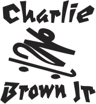

Charlie Brown Jr
Uma banda de rock formada em 1992 na cidade de Santos
Sobre os anos iniciais da banda
Charlie Brown Jr. foi uma banda brasileira de rock formada em 1992 na cidade de Santos, por Chorão (vocal), Champignon (baixo), Marcão Britto (guitarra), Thiago Castanho (guitarra) e Renato Pelado (bateria).Sua discografia contabiliza 11 álbuns de estúdio lançados, 4 álbuns ao vivo e 7 DVDs. Excetuando Chorão, todos os membros da banda são naturais de Santos, uma vez que o vocalista é natural de São Paulo.
A banda encerrou suas atividades em 2013, quando na madrugada do dia 6 de março daquele ano, Chorão foi encontrado morto em seu apartamento em São Paulo, devido a uma overdose de cocaína. Posteriormente a isso os demais membros do Charlie Brown se reuniram em projetos distintos para preservar a memória de Chorão e manter o seu legado vivo.
Atualmente os antigos membros do banda, como exceção de Renato Pelado e Heitor Gomes, seguem apresentando a obra do Charlie Brown Jr. por todo o Brasil com o projeto Marcão Britto & Thiago Castanho - Charlie Brown Jr. 30 Anos.O projeto está em circulação de 2022 e conta com Egypcio (ex-Tihuana) nos vocais.
Em 2013, logo após à morte de Chorão, os membros remanescentes chegaram a mudar o nome da banda para A Banca, com Champignon assumindo os vocais.Porém, o grupo encerrou as atividades em setembro do mesmo ano, após Champignon cometer suicídio em sua casa, também em São Paulo, na madrugada do dia 9 daquele mês.
Em 2019, Marcão Britto, Heitor Gomes e Pinguim fizeram uma turnê com convidados nos vocais.
Em julho de 2015, um levantamento do Deezer revelou que o Charlie Brown Jr. é a segunda banda de rock brasileira mais ouvida no exterior, atrás apenas do Sepultura. Em setembro de 2015, uma pesquisa similar da Billboard Brasil divulgou uma lista com 47 bandas e artistas brasileiros, na qual o Charlie Brown Jr. ficou na 31ª posição, o quarto grupo (depois do Sepultura, Natiruts e Tribalistas).
"Tenho um lado irônico. Tenho um lado insuportável. Tenho um lado amável. E cada um tem o meu lado que merece."
Chorão
- Entre 1999 e 2006, a banda Charlie Brown Jr. conquistou espaço na mídia e se tornou conhecida por todo o Brasil. No entanto, Champignon e Chorão tiveram algumas desavenças
- Em entrevista após o enterro de Chorão, Graziela Gonçalves, ex-mulher do cantor, indicou que a morte tinha relação com o abuso de drogas. "Eu lutei por ele até o final. Acabei perdendo a guerra para essa droga, que está acabando com todo mundo", declarou a estilista à época.
- Você sabia que Heitor Gomes é filho de um dos maiores nomes do contrabaixo brasileiro de todos os tempos, o músico Chico Gomes. Heitor sempre teve o incentivo de seu pai para tocar, e apesar de ser o integrante mais novo do Charlie Brown Jr tem experiência musical de longa data.
- Chorão subiu pela primeira vez no palco durante um show de uma banda de amigos em Santos. O vocalista precisou ir ao banheiro e ele foi obrigado a assumir o microfone. Deu tão certo que acabou convidado para tocar em uma banda.
Lista de premios e indicações recebidos por Charlie Brown Jr.
| Ano | Prêmio | Single/Canção | Indicação | Resultado |
|---|---|---|---|---|
| 1998 | MTV Video Music Brasil | Proibida pra mim | "Melhor Videoclipe do Ano" | Indicado |
| 1999 | MTV Video Music Brasil | Zóio de Lula | Melhor Videoclipe do Ano | Indicado |
| 2000 | MTV Video Music Brasil | Confisco | Melhor Videoclipe do Ano | Indicado |
Eu faço da dificuldade a minha motivação. A volta por cima vem na continuação.
As flores são bonitas em qualquer lugar do mundo
muita gente tem forma, mas não tem conteúdo
Cada escolha
Uma renúncia
Essa é a vida.
Charlie Brown Jr

Você pode conhecer mais sobre a banda clicando aqui